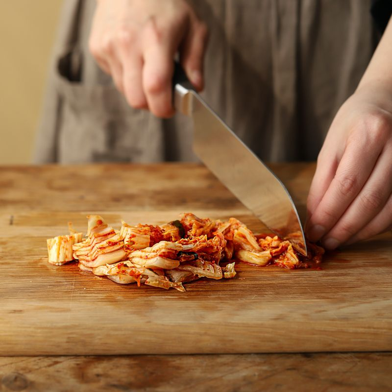

-
돼지고기는 먹기 좋은 크기로 썰고 고기 밑간 재료에 10분 정도 재워주세요.
-

김치는 소를 털어 낸 후 한입 크기로 썰고 양파는 채를 썰어주세요. 청양고추와 홍고추, 대파는 어슷하게 썰어주세요. 볼에 양념 재료를 넣어 섞어주세요.
-
냄비에 고추기름과 대파 반을 넣고 중약불에서 달달 볶아주세요. 파 향이 올라오면 돼지고기를 넣어 볶고 고기의 표면이 익으면, 김치와 양파를 넣어 한 번 더 볶아주세요.
-
멸치 다시마 육수를 붓고 양념장을 넣어 5분 정도 끓이다가 순두부를 숟가락으로 큼직하게 떠 넣어 끓여주세요.
-
마지막에 홍고추, 청양고추, 대파를 넣고 달걀노른자를 올린 후 한소끔 끓여 맛있게 즐겨주세요.